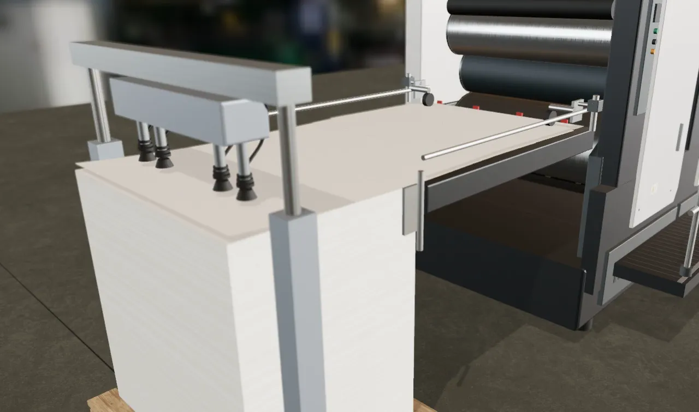

Cartonnages industriels · Bayonne
La fabriqued’une boîte.
Suivez une feuille de carton sous les cylindres, entre les courroies et jusque dans les mains du client.
À l’image La plieuse-colleuse de l’atelier

01 / 05Impression
La presse offset
La feuille quitte la pile. Chaque groupe imprimant y dépose une couleur.
Vue en coupe
Le film montre l’impression, la découpe et le rainage, le collage de la patte latérale, le départ des étuis à plat et l’ouverture d’un étui à la réception. Une transcription suit l’album de l’atelier.
Photographies de l’entreprise
L’atelier de Bayonne.
Quatre générations de cartonnage à Bayonne. Voici les machines qui ont inspiré les coupes du film.

Du bureau d’études au pliage-collage, l’entreprise travaille le carton compact et la micro-cannelure.
Lire le parcours de la boîte
- Impression offset. La feuille quitte la pile. L’encre passe de la plaque au blanchet, puis du blanchet au carton. Le motif apparaît au passage des groupes successifs.
- Découpe et rainage. L’autoplatine presse la feuille contre la forme. Les filets coupants détachent le contour, les filets de rainage marquent les futurs plis. La chute se sépare de l’étui.
- Pliage-collage. La colle est déposée sur la patte latérale du modèle. Les guides rabattent les pans puis les courroies maintiennent le joint sous pression.
- Expédition. Les étuis collés sont empilés à plat, conditionnés en caisse et chargés pour le transport.
- Chez le client. Un étui sort de la caisse. Ses faces s’écartent, sa section devient rectangulaire et ses rabats se ferment.
Le film suit un étui d’étude. Ses décors et la réception chez le client sont des reconstitutions. Découvrir les procédés de l’entreprise